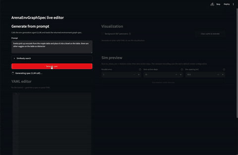
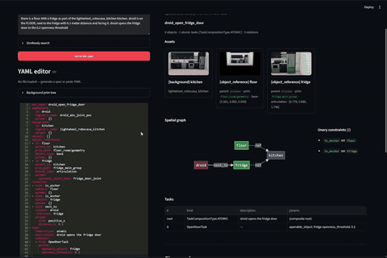

Agentic Environment Generation GUI#
The agentic environment-generation GUI is a Streamlit live editor for creating,
reviewing, editing, saving, visualizing, and simulation-previewing
ArenaEnvGraphSpec YAML files.
What comes back depends on the model behind the selected endpoint — see Inference Model and Spec Quality.
Use --inference_endpoint to pick the endpoint the GUI generates with. Since the model is
non-deterministic, it’s important to review and correct what it returns.
Run the GUI from inside the Isaac Lab-Arena development container:
python isaaclab_arena_examples/agentic_environment_generation/gui_runner.py
You can also open an existing environment graph spec:
python isaaclab_arena_examples/agentic_environment_generation/gui_runner.py \
--env_spec isaaclab_arena/tests/test_data/pick_and_place_maple_table_env_graph.yaml
By default, generated YAML files are written under
isaaclab_arena_environments/agent_generated. Use --out_dir to choose a
different output directory, or --port to run Streamlit on a different port.

Run the full pipeline from a natural-language prompt to generated YAML, automatically updated asset snapshots and graph visualization, and a simulation preview.#
UI Panels#
The page is split into a left editing column and a right preview column.
- Generate from prompt
Enter a natural-language task and scene description, then click
Generate spec. The GUI calls the environment-generation agent and loads the returnedArenaEnvGraphSpecYAML into the editor. When validation fails, the invalid YAML is still loaded into the editor and the validation traces are shown alongside it.- YAML editor
Edit the generated or loaded
ArenaEnvGraphSpecdirectly. The editor validates the YAML as you work and shows either a valid-spec summary or the parse/validation error. TheSave YAMLbutton writes the spec to<env_name>.yamlin the configured output directory. A searchable background prim-tree panel helps identify prim paths while editing.- Visualization
Shows an automatically refreshed dashboard for valid YAML. The dashboard includes graph nodes, node thumbnails when available, the graph layout, task rows, and initial-state information. Snapshot axis overlays use red for \(+X\), green for \(+Y\), and blue for \(+Z\). If the YAML is invalid, the panel waits until the error is fixed before rendering.
- Sim preview
Runs the full Arena environment construction from YAML, relation solving, and zero-action rollout in a SimulationApp side process. Controls let you set the number of parallel environments, zero-action steps, and environment spacing. The preview uses the task’s default viewer configuration and displays a viewport video of the rollout.
Editing and Update Flow#
The main update flow is:
Type a prompt and click
Generate.The agent receives the prompt and returns an
ArenaEnvGraphSpec. The generated YAML is loaded into the editor and saved as<env_name>.yaml.The user can manually edit the YAML in the editor. Once the edited YAML passes validation, click
Save YAMLto write it to the output directory. UseChange output directoryto choose a different output location. The filename is derived fromenv_nameand can be changed by editingenv_namein the YAML editor.The graph visualization refreshes automatically when the valid YAML text changes.
Click
Run relation solver previewto manually trigger the simulation preview. This action sends the current editor text to the SimApp preview service, builds the Arena environment, solves relations, runs the configured zero-action rollout, and displays the recorded viewport video.

Edit the YAML with live validation, save it to a file, and review the asset snapshots and graph visualization as they update automatically.#